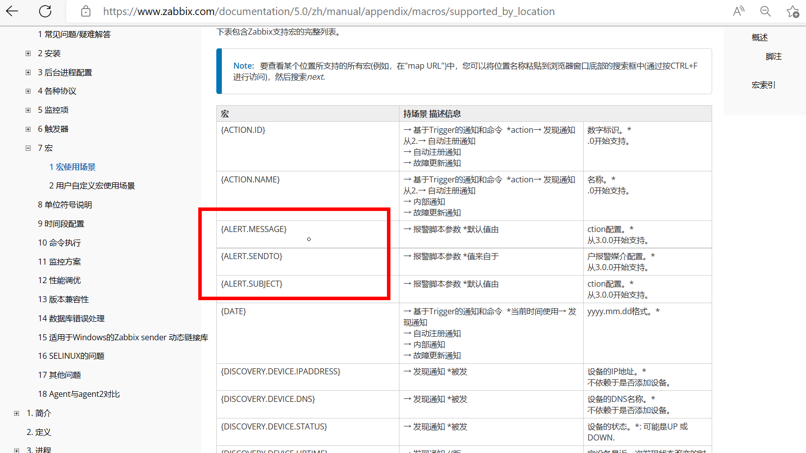
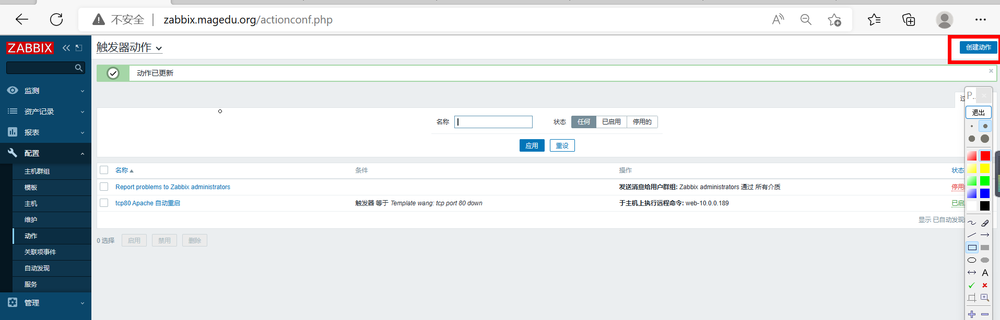
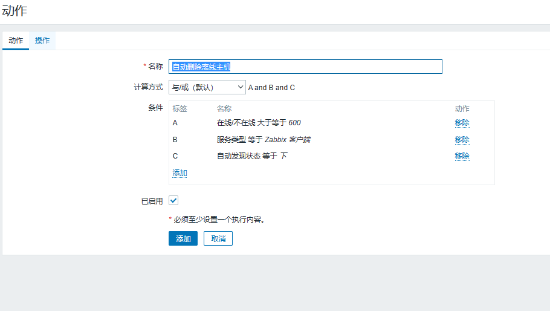

[TOC]
一、zabbix 架构原理，及常用组件及用途分析
SERVER
Zabbix server 是 Zabbix 软件的核心组件
Zabbix Agent 向其报告可用性、系统完整性信息和统计信息。
Zabbix server也是存储所有配置信息、统计信息和操作信息的核心存储库。
Zabbix server也是Zabbix监控系统的告警中心。在监控的系统中出现任何异常，将发出通知给管理员。
基本的 Zabbix Server 的功能分解成为三个不同的组件。他们是：Zabbix server、Web前端和数据库。
Zabbix 的所有配置信息都存储在 Server和Web前端进行交互的数据库中。例如，当你通过Web前端（或者API）新增一个监控项时，它会被添加到数据库的监控项表里。然后，Zabbix server 以每分钟一次的频率查询监控项表中的有效项，接着将它存储在 Zabbix server 中的缓存里。这就是为什么 Zabbix前端所做的任何更改需要花费两分钟左右才能显示在最新的数据段的原因。
数据库
所有配置信息以及 Zabbix 采集到的数据都被持久存储在数据库中
可以支持MySQL,PostgreSQL,Oracle 等多种数据库
WEB 界面
WEB 界面是 Zabbix server 的一部分，用于实现展示和配置的界面
通常（但不一定）和 Zabbix server 运行在同一台物理机器上
基于 Apache(Nginx)+PHP 实现,早期只支持LAMP架构,从Zabbix5.0开始支持LNMP
AGENT
Zabbix agents 部署在被监控目标上，用于主动监控本地资源和应用程序，并将收集的数据发送给Zabbix server。从Zabbix5.0开始支技Zabbix Agent2
PROXY
Zabbix Proxy 可以代替 Zabbix Server 采集性能和可用性数据
Zabbix Proxy 在 Zabbix 的部署是可选部分
Zabbix Proxy 的部署可以很好的分担单个Zabbix server的负载
Java 网关
Zabbix 要监控 tomcat 服务器和其它JAVA程序，需要使用 Java gateway 做为代理,才能从JAVA程序中获取数据
内部配置的数据流程
Zabbix 内部的数据流对Zabbix的使用也很重要。首先，为了创建一个采集数据的监控项，就必须先创建主机。其次，在任务的另外一端，必须要有监控项才能创建触发器（trigger），必须要有触发器来创建动作（action）。因此，如果您想要收到类似“X个server上CPU负载过高”这样的告警，您必须首先为 Server X 创建一个主机条目，其次创建一个用于监控其 CPU的监控项，最后创建一个触发器，用来触发 CPU负载过高这个动作，并将其发送到您的邮箱里。虽然这些步骤看起来很繁琐，但是使用模板的话，实际操作非常简单。也正是由于这种设计，使得 Zabbix 的配置变得更加灵活易用。
二、监控LNMP架构，并配置报警升级，0-5分钟不报警执行重启应用，5-30分钟邮箱通知运维，30-60分钟邮箱通过总监 2.1、zabbix环境 rocky8+zabbix5.0
2.2、搭建监控LNMP架构 1 2 3 4 5 6 7 8 9 10 11 12 13 14 15 16 17 18 19 20 21 22 23 24 25 26 27 28 29 30 31 32 33 34 35 36 37 38 39 40 41 42 43 44 45 46 47 48 49 50 51 52 53 54 55 56 57 58 59 60 61 62 63 64 65 66 67 68 69 's#http://repo.zabbix.com#https://mirrors.tuna.tsinghua.edu.cn/zabbix#' /etc/yum.repos.d/zabbix.repoenable --now mysqldcat << EOF | mysql create database zabbix character set utf8 collate utf8_bin; create user zabbix@localhost identified by '123456'; grant all privileges on zabbix.* to zabbix@localhost; EOF '/# DBPassword/a DBPassword=123456' /etc/zabbix/zabbix_server.confenable --now nginx'/^server/a\ listen 80;\n server_name zabbix.magedu.org; ' /etc/nginx/conf.d/zabbix.conf'/date.timezone/c php_value[date.timezone] = Asia/Shanghai' /etc/php-fpm.d/zabbix.confenable zabbix-server zabbix-agent2 nginx php-fpm's#http://repo.zabbix.com#https://mirrors.tuna.tsinghua.edu.cn/zabbix#' /etc/yum.repos.d/zabbix.repo'/^Server=/c Server=10.0.0.190' /etc/zabbix/zabbix_agent2.conf enable zabbix-agent2
2.3、配置报警升级 2.3.1、实现故障自愈功能（检测到Apache关闭时，自动重启） 配置远程命令的操作类似于发送消息，区别在于一个执行命令，一个发送消息
远程命令可以直接在ZabbixServer, ZabbixProxy和ZabbixAgent上执行。
但在Zabbix agent和Zabbix proxy上，远程命令默认是不开启的，它们可以通过以下方式启用：
1 2 3 4 在agent配置中添加AllowKey=system.run[*]、UnsafeUserParameters=1参数
2.3.1.1、zabbix agent开启远程命令 1 2 3 4 5 6 7 8 9 10 11 12 13 14 15 16 17 18 19 20 21 22 [root@zabbix_agent2 ~]
2.3.1.2、创建相关动作 ①创建触发器
②创建动作
③创建远程操作细节
④停止apache看是否重新启动
在监测页面可以看到动作执行
在agent服务器端也可以看到80端口已启动
2.3.2、实现邮件报警通知 2.3.2.1、创建报警媒介类型实现发信人功能 管理–>报警媒介类型–>创建报警媒介类型
添加消息模板用于发送信息
1 2 3 4 5 6 7 8 9 10 11 12 13 14
2.3.2.2、给指定用户添加报警媒介实现收件人功能
2.3.2.3、在动作里面添加邮件报警
三、zabbix api批量添加多个主机，要求一些不走代理，一些支持走代理 API（Application Programming Interface，应用程序编程接口）是一些预先定义的函数，目的是提供应用程序与开发人员基于某软件或硬件得以访问一组功能的能力，而又无需直接使用源代码，或理解内部工作机制的细节。
Zabbix API允许你以编程方式检索和修改Zabbix的配置，并提供对历史数据的访问。它广泛用于:
创建新的应用程序以使用Zabbix
将Zabbix与第三方软件集成
自动执行常规任务
Zabbix API是基于Web的API，作为Web前端的一部分提供。它使用JSON-RPC 2.0协议，这意味着两件事:
API 采用 JSON-RPC 实现。这意味着调用任何函数，都需要发送 POST 请求，输入输出数据都是以JSON 格式。
Zabbix API由许多名义上分组的独立API方法组成。每个方法执行一个特定任务 。
例如，方法 host.create 隶属于 host 这个API分组 ，用于创建新主机。API分组有时被称为“类”。
大多数API至少包含四种方法: get， create， update 和 delete ，分别是检索，创建，更新和删除数据，但是某些API提供一套完全不同的一组方法。
Zabbix常用API
1 2 3 4 5 6 7 user.login
3.1、获取Token 1 2 3 4 5 6 7 8 9 10 11 12 13 14 15 16 17 18 19 20 'Content-Type:application/json' -d ' { "jsonrpc": "2.0", "method": "user.login", "params": { "user": "zhangtianxiang", "password": "123456" }, "id": 1 }' http://$ZABBIX_SERVER /api_jsonrpc.php"jsonrpc" :"2.0" ,"result" :"5e5f4cd57c79a24319cffecae0d7261c" ,"id" :1}
注意：
①在通常的测试场景中，直接输出JSON结果的结果很乱，没有换行，没有任何格式，看起来很复杂，如果想要格式化输出，需要花费很多的时间对结果进行处理，使用python的json.tool可以直接将结果以json格式输出，看起来美观易读
②还可以利jq工具实现类似的效果
1 2 3 4 5 6 7 8 9 10 11 12 13 14 15 16 "jsonrpc" : "2.0" ,"result" : "45909ac689943e0761e5e3deaea55a51" ,"id" : 1"jsonrpc" : "2.0" ,"result" : "05ab62b170e52a584ea4b9c6656782a0" ,"id" : 1
3.2、通过API批量添加主机 通过API添加主机命令格式 ：API添加主机为预先知道要添加的主机IP、预先安装并配置好zabbix agent、预先知道要关联的模板ID/组ID等信息，然后同API提交请求添加
例如：
1 2 3 4 5 6 7 8 9 10 11 12 13 14 15 16 17 18 19 20 21 22 23 24 25 26 27 28 29 30 31 curl -s -X POST -H 'Content-Type:application/json' -d ' { "jsonrpc": "2.0", "method": "host.create", #定义方法，N多种 "params": { "host": "API Add Host Test", #自定义添加后的agent的名称 "proxy_hostid": "10273",#proxy的ID "interfaces": [ { "type": 1, #类型为1表示agent，2是SNMP，3是IMPI,4是JMX "main": 1, #more接口 "useip": 1, #0是使用DNS，1是使用IP地址 "ip": "192.168.0.24", #添加的zabbix agent的IP地址 "dns": "", "port": "10050" #agent端口 } ], "groups": [ { "groupid": "2" #添加到的组的ID } ], "templates": [ { "templateid": "10001" #关联的模板的ID } ] }, "auth": "977781251d1222ebead6f05da1a9ec4d", "id": 1 }' http://192.168.7.101/zabbix/api_jsonrpc.php
3.2.1、获取组的ID 直接在web界面上点击相应的组就会出现对应的ID
3.2.2、获取关联模板的ID 直接在web界面上点击相应的模板就会出现对应的ID
3.2.3、获取代理proxy的ID 直接在web界面上点击相应的代理就会出现对应的ID
3.2.4、使用脚本批量添加主机 1 2 3 4 5 6 7 8 9 10 11 12 13 14 15 16 17 18 19 20 21 22 23 24 25 26 27 28 29 30 31 32 33 34 35 36 37 38 39 40 41 42 43 44 45 46 47 48 49 50 51 52 53 54 55 56 57 58 59 60 61 62 63 64 65 66 67 68 69 70 71 72 73 74 75 76 77 78 79 80 81 82 83 84 85 [root@zabbix_agent2 ~]'"' '{print $8}' )for ((i=0; i<${#IPLIST[@]} ; i++ ));do ' { "jsonrpc": "2.0", "method": "host.create", "params": { "host": "' ${IPLIST[$i]} '", "name": "' web-api-${IPLIST[$i]} '", "interfaces": [ { "type": 1, "main": 1, "useip": 1, "ip": "' ${IPLIST[$i]} '", "dns": "", "port": "10050" } ], "groups": [ { "groupid": "18" } ], "templates": [ { "templateid": "10444" } ] }, "id": 1, "auth": "' $TOKEN '" }' ' { "jsonrpc": "2.0", "method": "host.create", "params": { "host": "' ${IPLIST[$i]} '", "name": "' web-proxy-api-${IPLIST[$i]} '", "proxy_hostid": "10446", "interfaces": [ { "type": 1, "main": 1, "useip": 1, "ip": "' ${IPLIST[$i]} '", "dns": "", "port": "10050" } ], "groups": [ { "groupid": "18" } ], "templates": [ { "templateid": "10444" } ] }, "id": 1, "auth": "' $TOKEN '" }' if [ $i -lt 2 ];then "Content-Type: application/json-rpc" -d "${add_host} " http://${ZABBIX_SERVER} /api_jsonrpc.phpelse "Content-Type: application/json-rpc" -d "${add_proxy_host} " http://${ZABBIX_SERVER} /api_jsonrpc.phpfi done "jsonrpc" :"2.0" ,"result" :{"hostids" :["10451" ]},"id" :1}{"jsonrpc" :"2.0" ,"result" :{"hostids" :["10452" ]},"id" :1}{"jsonrpc" :"2.0" ,"result" :{"hostids" :["10453" ]},"id" :1}
四、总结zabbix自定义监控项，基于自定义监控项监控nginx 4.1、自定义监控项 系统内置的监控项：zabbix5.0参考文档
1 2 https://www.zabbix.com/documentation/5.0/zh/manual/config/items/itemtypes/zabbix
4.1.1、自定义监控项配置 监控项键值的格式
1 https://www.zabbix.com/documentation/5.0/zh/manual/config/items/item/key
客户端可以自定义监控项，在Zabbix Agent 配置文件添加内容,格式如下
1 2 3 4 5 6 7 8 9 command >command >
注意 ：
key 必须整个系统唯一 。注意大小写是敏感的, Key名允许的字符如下
key使用 [*] 用于定义该key接受括号内的参数。参数需在配置监控项时给出；参数禁止使用下列字符：\ ’ ” ` * ? [ ] { } ~ $ ! & ; ( ) <>
Command：命令用于生成key对应的值。可以在命令中使用位置引用$1 … $9来引用监控项Key中的相应参数。Zabbix解析监控项Key的[]中包含的参数，并相应地替换$1，…，$9。$0会替换为完整的原始命令（在对$0，…，$9执行替换之前的命令）运行。不管位置参数（$0,…,$9)是用双引号( “ )还是单引号( ’ )括起来，都会解析位置引用
测试监控项
1 2 3 4 5 "在客户端定义的key名" "在客户端定义的key名"
4.2、监控Nginx服务 4.2.1、自定义监控nginx（状态页） 1 2 3 4 5 6 7 8 9 10 11 12 13 14 15 16 17 18 19 20 21 22 [root@zabbix_agent2_centos ~]
4.2.2、配置agent2 1 2 3 4 5 6 7 8 9 10 11 12 13 14 15 16 17 18 19 20 21 22 23 24 25 26 27 28 29 30 31 32 33 34 35 36 37 38 39 40 41 42 43 44 45 46 case $1 in "http://$HOST :" $PORT "/nginx_status/" 2>/dev/null| grep 'Active' | awk '{print $NF}' "http://$HOST :" $PORT "/nginx_status/" 2>/dev/null| grep 'Reading' | awk '{print $2}' "http://$HOST :" $PORT "/nginx_status/" 2>/dev/null| grep 'Writing' | awk '{print $4}' "http://$HOST :" $PORT "/nginx_status/" 2>/dev/null| grep 'Waiting' | awk '{print $6}' "http://$HOST :" $PORT "/nginx_status/" 2>/dev/null| awk NR==3 | awk '{print $1}' "http://$HOST :" $PORT "/nginx_status/" 2>/dev/null| awk NR==3 | awk '{print $2}' "http://$HOST :" $PORT "/nginx_status/" 2>/dev/null| awk NR==3 | awk '{print $3}' echo $"Usage: $0 { active | reading | writing | waiting | accepts | handled | requests}" esac $1
4.2.3、自定义模板及监控项并添加监控的主机上关联模板 创建模板
添加监控项
关联主机
查看是否更新数据
五、基于zabbix实现邮件或微信告警 5.1、注册企业微信 微信告警首先得注册一个企业微信，然后才能实现微信告警。
浏览器访问下面链接,注册企业微信
1 https://work.weixin.qq.com/
5.2、创建部门和人员 5.2.1、创建部门
5.2.2、加入人员 方法1: 直接微信邀请,让相关人员自行扫码加入
方法2：手动添加人员
5.3、将微信应用中添加相关的部门或人员
注意记下以下信息：
1 2 应用的 AgentId值1000002
1 查看到企业ID的值为 ww488a1e5ba0db2852
5.4、授权可信ip 在应用中添加 企业可信IP (最近添加的功能,必须配置IP白名单才能发微信,否则会出错)
添加可信ip前还需要添加真实域名（因暂未添加，所以后面只展示步骤，不再展示测试结果）
5.5、测试发送微信消息
5.6、创建发送微信脚本 官方微信教程
官方微信API参考文档
1 https://developer.work.weixin.qq.com/document/path/90664
官方微信API参考文档
1 https://developer.work.weixin.qq.com/document/path/91039
发送微信可以使用各种语言,下面使用shell脚本实现
1 2 3 4 5 6 7 8 9 10 11 12 13 14 15 16 17 18 19 20 21 22 23 24 25 26 27 28 29 30 31 32 33 34 35 36 37 38 39 40 41 42 43 44 "ww488a1e5ba0db2852" "gc-CapCl6aSxmZm9knrTC_IqbwS70I5A8Q3BwywoXpY" "https://qyapi.weixin.qq.com/cgi-bin/gettoken? corpid=$CorpID &corpsecret=$Secret " $GURL |awk -F\": '{print $4}' |awk -F\" '{print $2}' )"https://qyapi.weixin.qq.com/cgi-bin/message/send?access_token=$Token " function body local int agentid=1000002local UserID=$1 local PartyID=2local Msg=$(echo "$@ " | cut -d" " -f3-)printf '{\n' printf '\t"touser": "' "$UserID " \"",\n" printf '\t"toparty": "' "$PartyID " \"",\n" printf '\t"msgtype": "text",\n' printf '\t"agentid": "' "$agentid " \"",\n" printf '\t"text": {\n' printf '\t\t"content": "' "$Msg " \""\n" printf '\t},\n' printf '\t"safe":"0"\n' printf '}\n' "$(body $1 $2 $3) " $PURL "errcode" :60020,"errmsg" :"not allow to access from your ip, hint: [1671332081303762937774104], from ip: 106.117.126.69, more info at https://open.work.weixin.qq.com/devtool/query?e=60020" }
5.7、创建微信报警媒介类型
报警媒介类型为脚本,脚本参数为以下三项
1 2 3 {ALERT.SENDTO}--收件人媒介
官方宏参考:
1 https://www.zabbix.com/documentation/5.0/zh/manual/appendix/macros/supported_by_location

注意:此处可以只填写{ALERT.SENDTO}和{ALERT.MESSAGE}即可
修改消息模板
1 2 3 4 5 6 7 8 9 10 11 12 13 14
5.8、给Zabbix用户添加报警媒介
5.9、创建动作 5.9.1、编辑已有动作 如果已经创建动作，可以修改已有动作，如下所示
5.9.2、创建动作 如果之前没有动作，新创建动作

六、总结zabbix自动发现监控 6.1、自动发现 6.1.1、Zabbix网络发现介绍 之前都是手动一台一台主机的添加到 Zabbix 中进行监控,很是繁琐,可以利用自动发现功能,自动添加被监控的主机
当众多的服务器都已经安装了agent或者snmp后，利用自动发现功能,Zabbix server 可以自动扫描预先配置好的ip段，自动添加主机，自动关联模板，自动加到主机组里等等。
网络发现功能更快速的部署zabbix、简化zabbix管理、并且在经常变动的环境里面也不需要花太多的精力，毕竟网络发现也能随时发现变化。
当然网络发现也不是万能的,虽然网络发现能干很多事情，但是它无法发现网络拓扑的变化。
由于自动发现效率比较低,严重消耗Zabbix Server资源和网络带宽,大规模环境中较少使用
自动发现虽然能自动完成发现并添加主机，但仍然存在一些问题
发现时间长，效率较低
扫描过程中容易漏扫
当IP地址不固定难以实现
无法实现不同类型主机关联不同模板
官方文档
1 https://www.zabbix.com/documentation/5.0/zh/manual/discovery/network_discovery
6.1.2、实现Zabbix网络发现 自动发现由两个步骤组成:
6.1.2.1、创建自动发现指定需要监控的网段 配置– 自动发现– 创建发现规则
指定名称,IP范围和逢动发现检查等信息
可见名称为IP地址
6.1.2.2、创建添加主机的自动发现动作 创建新的动作
操作增加三个操作: 添加主机,添加群组,添加模板
也可以添加发送消息给Admin等操作
6.1.2.3、创建删除主机的自动发现动作 
6.2、自动注册 6.2.1、自动注册介绍 当客户端众多时,将每台主机手动添加到Zabbix,还手动添加关联模板,无疑是低效的.
但是利用网络发现实现,Zabbix Server 资源消耗又比较严重
利用Zabbix的自动注册功能,实现添加主机的自动化,可以大幅减少运维的工作量,减少Zabbix Server 的资源消耗
此方式和自动发现不同,是由Active agent主动发起请求zabbix server将这些agent加到主机里。
注意: Agent 必须使用主动模式才支持自动注册
自动注册由于比自动发现效率更好,Zabbix Server资源消耗更少,更适合大规模及云环境IP地址不固定的场景使用
官方帮助
1 https://www.zabbix.com/documentation/5.0/zh/manual/discovery/auto_registration
在Zabbix agent 端的配置文件修改以下项目
1 2 3 4 5 6 Server=<Zabbix Server IP>
6.2.2、修改Zabbix agent的配置 1 2 3 4 5 6 [root@Rocky8 ~]
6.2.3、在Zabbix Server配置动作 在配置—动作—选择自动注册动作
指定动作中条件的主机名的值
或者使用元数据添加
指定操作